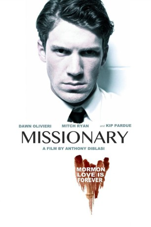

#8424 Missionary
 
 IMDB-Wertung: 5.2 / 10
IMDB-Wertung: 5.2 / 10  Metascore: 0
Metascore: 0 
Katherine lebt mit ihrem Sohn Kesley nach der Trennung von ihrem Mann zurückgezogen. Eines Tages lernt sie den freundlichen mormonischen Missionar Kevin Brock kennen. Bald fühlt sich Katherine zu dem jungen Mann, der ihr zuh��rt und ihr Verständnis zeigt, mehr und mehr hingezogen. Nach einer kurzen, leidenschaftlichen Affäre versöhnt sie sich aber wieder mit ihrem Exmann Ian. Doch Kevin will das nicht akzeptieren. Sein tiefer Glauben ist nur Fassade, die langsam bröckelt. Nun zeigt er seine andere, dunkle Seite. Etwas, das er einmal „besessen“ hat, gibt er nicht wieder her. Und auch kein anderer darf es besitzen. Für Kevin gibt es nur einen Weg, die Sache zu beenden ...
Jahr: 2013
Dauer: 90 Minuten
FSK: 16
Land: USA Studio: Freestyle ReleasingTonspuren: DTS - ,
Untertitel:
Auflösung: 1080p (1920x1080) Größe: 4177 MB
Genre: Thriller, Drama
Regisseur: Anthony DiBlasi
Drehbuch: Bruce Wood
Soundtrack: Dani Donadi
Darsteller:
 Dawn Olivieri als Katherine Kingsman
Dawn Olivieri als Katherine Kingsman- Mitch Ryan als Elder Kevin Brock
- Kip Pardue als Ian Kingsman
 J. LaRose als Sarge Powell
J. LaRose als Sarge Powell- Connor Christie als Kesley Kingsman
 Jordan Woods-Robinson als Alan Whitehall
Jordan Woods-Robinson als Alan Whitehall- Randy Molnar als President Anderson
- Jesse Malinowski als Elder Lillejord
- Dushawn Moses als Dr. West
- Cynthia Calhoun als Woman
 Glenn R. Wilder als Gene
Glenn R. Wilder als Gene- Gricel Castineira als Grace
- Samantha Serrano als Serenity
- McCarrie McCausland als Player 1
- Tara Dane als Poolside Companion
- Jared Cooley als Missionary (uncredited)
- Asia LeMasters als Server (uncredited)
- Danielle Kimberley als April Britton
- Mary Lankford Poiley als Waitress
- Kurt Smildsin als Customer
- Harlow Wood als Elder Polznick
- Skip Rhoads als Bathroom Boy (uncredited)
Datei: X:\2013(I-M)\Missionary (2013, FSK16, 1920x1080).mkv seit 02.03.2018
Festplatte: HD 2013(I-Z)-2014(A-Z)
 Es gibt insgesamt 89 Filme in der Gruppe '2013(I-M)'
Es gibt insgesamt 89 Filme in der Gruppe '2013(I-M)'